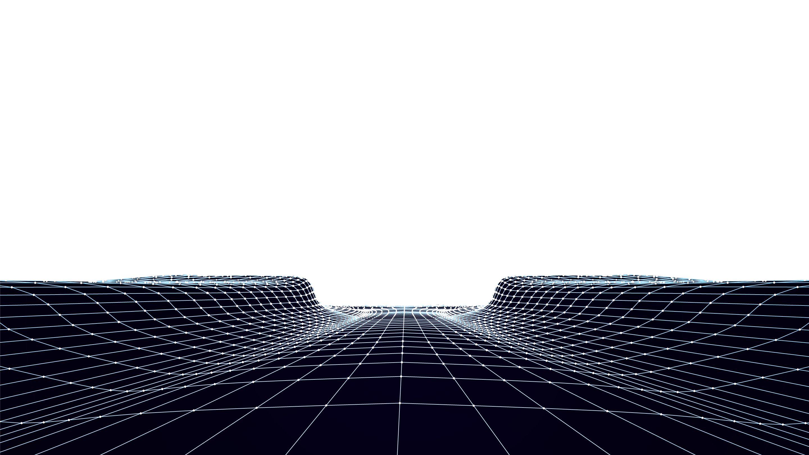

 
  <section class="banner">
    
    <!-- <div id="scene" parallaxItem class="parallax-container ">
    </div> -->
    
      <!-- <div  parallaxItem class="background" >
    
          <div class="layer" data-depth="1.00">  </div>


          
          
        </div> -->
     
        <!-- 1º imagen fondo con parallax -->

        <!-- 2º montañas recortadas -->
        
<!-- 
        <div  parallaxItem class="background" >
    
          <div class="layer-1" data-depth="1.00"></div>

          <div class="layer-2"></div>
       
        </div> -->


        
        
        
        <!-- 1º imagen fondo y añadir estrellas animacion (intentar meter parallax) -->
        
        <!-- 2º montañas recortadas  meter parallax si no funciona en las estrellas-->
        <div parallaxItem  class="background-stars" >
          
          <div class="layer-2"></div> 
          <div data-depth="1.00"  class="layer-3" >
            <div id="stars-1"></div>
            <div id="stars-2"></div>
            <div id="stars-3"></div>
          </div>

        </div>
        
        
        
        <div class="parallax-container--flex ">
          <p class="main-panel--text">Programming<br>and Design<br>of the FUTURE</p>
        
        
          <button class="btn p-relative" type="button"  [routerLink]="['/about']"
          fragment="about">
            <strong>ABOUT ME</strong>
            <div id="container-stars">
              <div id="stars"></div>
            </div>
          
            <div id="glow">
              <div class="circle"></div>
              <div class="circle"></div>
            </div>
          </button>
          
        </div>

  


   
  </section>
